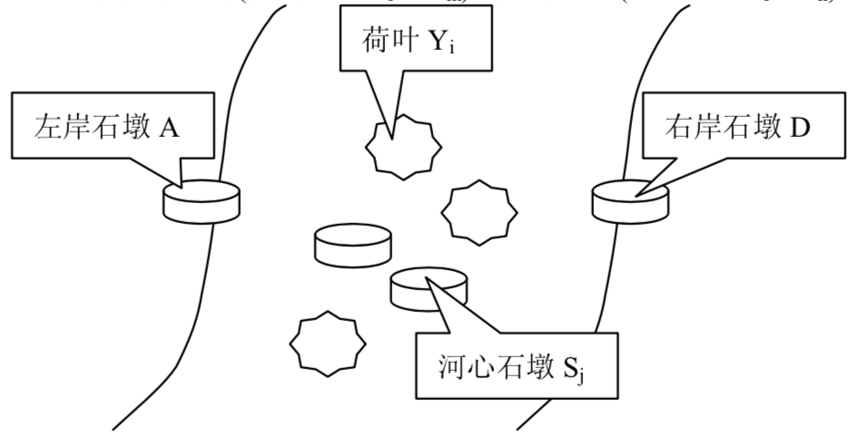
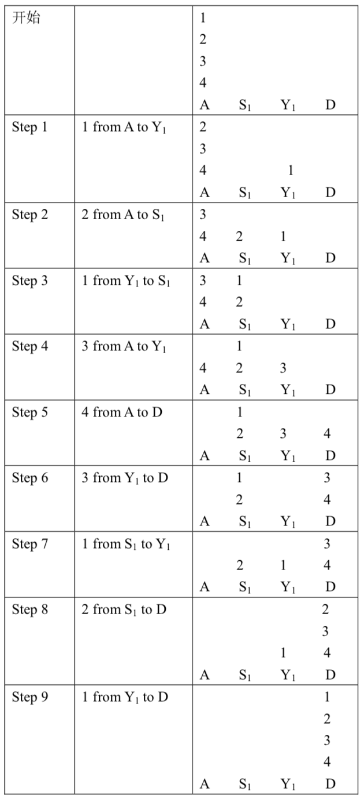

大小各不相同的一队青蛙站在河左岸的石墩（记为A）上，要过到对岸的石墩（记为D）上去。河心有几片菏叶（分别记为$Y_1…Y_m$）和几个石墩（分别记为$S_1…S_n$）。图示如下：

青蛙的站队和移动方法规则如下：
- 每只青蛙只能站在荷叶、石墩，或者仅比它大一号的青蛙背上（统称为合法的落脚点）；
- 一只青蛙只有背上没有其它青蛙的时候才能够从一个落脚点跳到另一个落脚点；
- 青蛙允许从左岸A直接跳到河心的石墩、荷叶和右岸的石墩D上，允许从河心的石墩和荷叶跳到右岸的石墩D上；
- 青蛙在河心的石墩之间、荷叶之间以及石墩和荷叶之间可以来回跳动；
- 青蛙在离开左岸石墩后，不能再返回左岸；到达右岸后，不能再跳回；
- 假定石墩承重能力很大，允许无论多少只青蛙都可呆在上面。但是，由于石墩的面积不大，至多只能有一只青蛙直接站在上面，而其他的青蛙只能依规则1落在比它大一号的青蛙的背上。
- 荷叶不仅面积不大，而且负重能力也有限，至多只能有一只青蛙站在上面。
- 每一步只能移动一只青蛙，并且移动后需要满足站队规则；
- 在一开始的时候，青蛙均站在A上，最大的一只青蛙直接站在石墩上，而其它的青蛙依规则6站在比其大一号的青蛙的背上。
青蛙希望最终能够全部移动到D上，并完成站队。
设河心有$m$片荷叶和$n$个石墩，请求出这队青蛙至多有多少只，在满足站队和移动规则的前提下，能从A过到D。
例如，在m=1且 n=1时，河心有一片荷叶（$Y_1$）和一个石墩（$S_1$），此时至多有4只青蛙能够过河（由小到大称为1、2、3、4），过河的一种方法为：

此例中，当河心有一片荷叶和一个石墩时，4只青蛙能够跳动9步过河。
 Comet OJ
Comet OJ